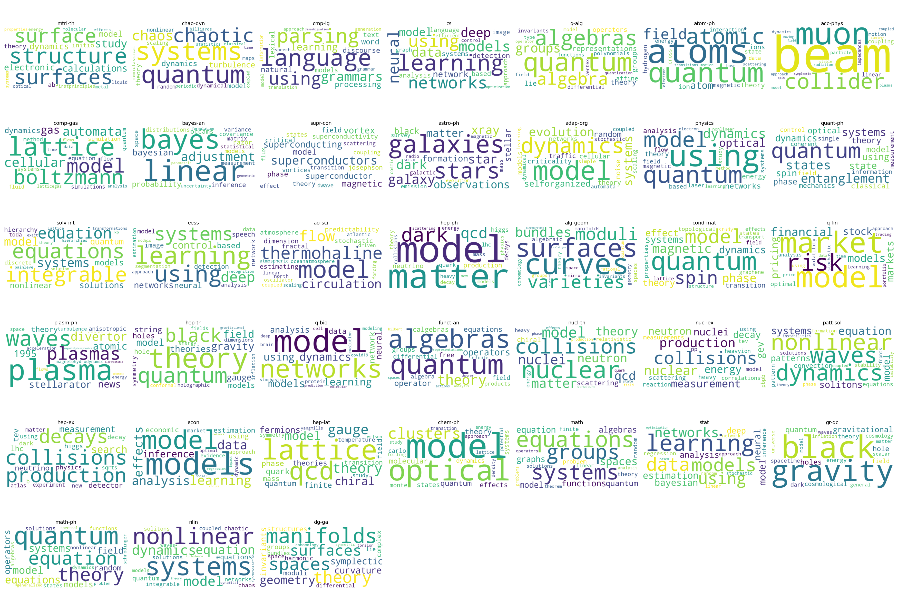

Interactive Report: ArXiv Trends Analysis
1. Analysis of Yearly Trends in ArXiv Main Categories
2. Cross-Disciplinary Analysis of Subcategories
3. High-Frequency Words in Titles by Category

4. Temporal Patterns of Revisions
5. Trends in Revision Frequency
6. Revision Dynamics Across Categories
7. Author Relationship Visualization
8. Paper Relationship Visualization
9. Comprehensive Visualization